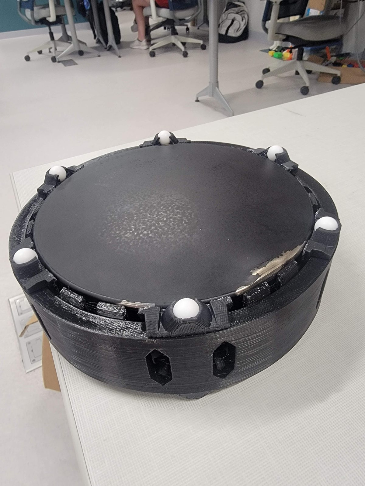

Blind Ice Hockey Puck
Roller Hockey Adaption

What is it for?
Blind ice hockey is a rapidly growing sport for the visually impaired. Instead of a standard rubber puck, they use a large aluminum puck that generates sounds when agitated. While this puck is great for ice surfaces, there has yet to be a solution for playing blind hockey on non-ice surfaces. I completed this entire project by myself as part of research at the Saint Louis University's CHROME Lab last summer.
The Design
The inserts were designed to be add-ons to the already existing 3D printed protecting cage. The inserts are 3D printed from ASA filament and can press fit 6 Teflon (PFTE) ball bearings on each side. The bearings can rotate freely within the inserts along which greatly reduced the sliding friction of the puck making it great for all surfaces.

Testing
In order to obtain a design that functions as seen, it required weeks of continuous ideation and altering different dimensions. By nature, 3D printing has poor tolerancing so a key component was making the bearings tight enough to contain the bearings, but not enough so the bearings cant rotate. This took many trials and very small tweaks in the design, but we were able to get a design that functions well.
Failure Modes
A significant challenge was making the inserts durable without sacrificing the performance of the puck. To solve this I used concepts from mechanics of materials in the CAD design as well as practical impact testing. We tested multiple filament materials and bearing materials, many of which failed like the one in this photo. But, with lots of trial and error we were able to build a successful design.